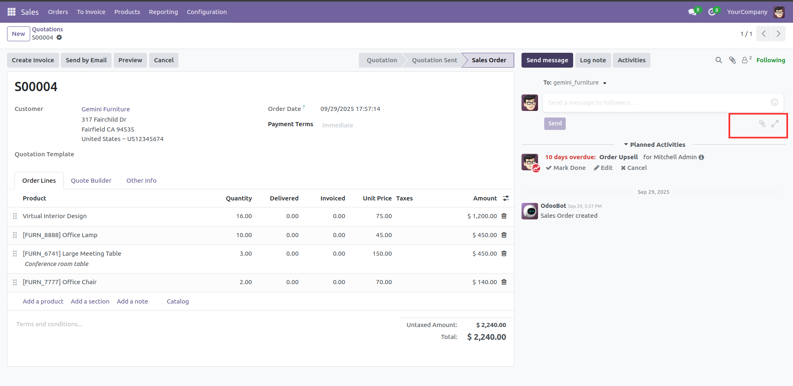
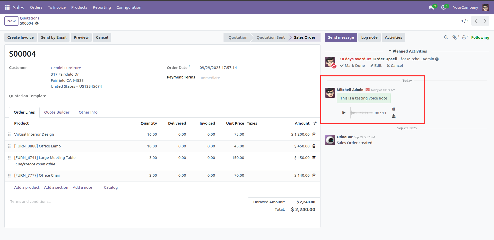

Introducing ZestyBeanz's 'Chatter Audio' module, a powerful Odoo add-on that enables users to add audio messages directly in the chatter.
Add Voice Notes: Add Voice Notes Along with Messasge,Documents and Video.
Seperate UI Action: Seperate UI Action To Record,Play and Delete Voice Notes.
Improved Logging: By Making Voice Notes along with Normal Logs will Provide More Clarity Of Working.

Once installed, a new “Record Voice Note” button becomes visible in the chatter interface.
Using this button, users can record, save, and manage voice notes directly within Odoo chatter.
